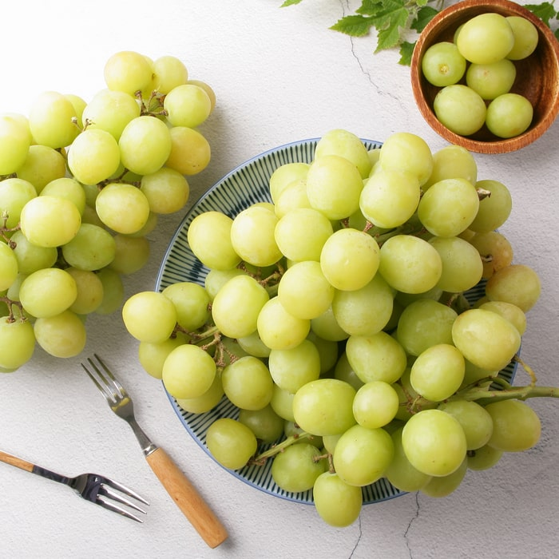

無籽葡萄
要有種子才能繁衍後代？
回答問題前，先複習一下果實是怎麼形成的。當雄蕊的花粉與雌蕊接觸後，便開始受精。一般正常情況下，受精後，原本雌蕊底端的子房會逐漸增大，開始結出果實，而果實中的種子所釋出的植物激素，便是啟動果實壯大成長的因素！

無籽水果可以沒有種子，怎麼辦到的？
- 現今有3種方法可以產生無籽水果：第1種是使用外源性的植物激素；第2種方法則是透過雜交手段；第3種是尋
找突變株（如種子不育、自身卻能夠產生足夠植物激素）。
- 無籽葡萄是使用第1種和第3種方法的結果。葡萄中的植物激素吉貝素（gibberellins, GAs）能夠促進果實成
長。而果農會使用赤黴菌（gibberella fujikuroi）所分泌的吉貝素，透過噴霧的方式將外源性的吉貝素施加在
葡萄的子房中。當子房被施加大量吉貝素時，短時間內子房的成長速度倍增，而種子跟不上這樣的速度，就沒有辦法
順利的形成，無籽葡萄就此誕生了！
- 無籽西瓜則是採用了第2種方式來獲得無籽果實。一般西瓜都是2倍體，也就是說細胞內含有2對染色體，可以正常結籽
。當科學家用秋水仙素（Colchicine）處理西瓜，使染色體加倍成為4倍體的西瓜，4倍體西瓜一樣也能結籽。但是，
當4倍體與2倍體西瓜雜交後會產生3倍體西瓜。當3倍體西瓜要產生卵細胞時，染色體會發生混亂，因而不能正常受精成為
種子。因此農夫會用2倍體西瓜的花粉對3倍體西瓜進行人工授粉，產出的西瓜就是無籽西瓜！
結論
我覺得無籽葡萄對於我們現在這種懶人很方便，不必吐籽也能享受到葡萄的味道，非常好的改良技術。
資料來源: